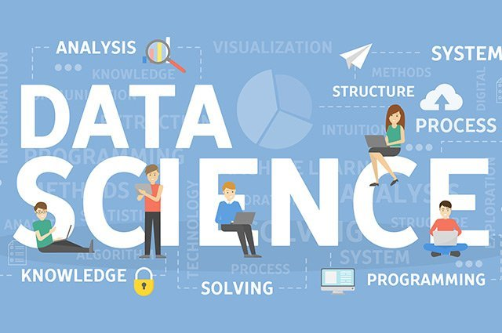

My History

I was born on June 9, 1997, in Jakarta. I am the oldest of 3 siblings. I am an alumni graduate of one of the most populous universities in Jakarta, namely the Atma Jaya Catholic University of Indonesia, where I majored in financial management.
I am currently pursuing a career working as a data scientist. Even though in reality there are many plans and goals that I want to achieve have to be delayed due to the current pandemic. I was also lucky and had the opportunity to get a pre-employment program from the government. I was also interested in learning skills as a web-developer. For me, this is the best moment to learn many things to prepare myself for the future.